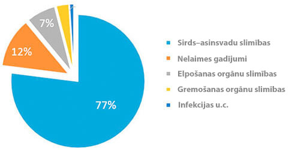

Statistika: Katrs 3. pilsonis, kas vecāks par 35 gadiem mirst no slimībām, ko izsauc hipertonija!
L.Beķeris: ”Es personīgi pirmajiem lasītajiem līdzekli no hipertonijas ar 50% atlaidi

Slavenais kardioķirurgs, medicīnas zinātnes organizators, profesors.
Sirds-asinsvadu slimības — pasaules līderi slimību vidū pēc dzīvību skaita, ko tās paņem. 94% infarktu un insultu notiek tieši paaugstinātā spiediena dēļ. 89% gadījumos hipertonija pie infarkta un insulta beidzas ar letālu iznākumu. Ja runā par konkrētiem lielumiem, tad hipertonija ir apmēram 77–78% nāvējošu “dabisko” iznākumu iemesls. Absolūtos skaitļos – apmēram 1,54 miljoni nāves 2016.gadā.
“Mirstību iemesli2016”
Pats šausmīgākais, ka vairums cilvēki pat nenojauš, ka viņiem ir hipertonija. Atbilstoši statistikai, 67% hipertoniķu nezina, ka viņi slimi. Lieta tāda, ka spiedienu lēcienus neviens neuztver nopietni, kamēr lieta nenonāks līdz hipertoniskai krīzei, kad spiediens vienkārši sasniedz maksimumu. Maz kas pievērš uzmanību galvassāpēm, galvas reiboņiem, vājumam, sejas tūskai, paātrinātai sirdsdarbībai, neskaidrai redzei, nervozitātei. Tā starpā, visi šie simptomi liecina par hronisku hipertonijas norisi. Un, ka steidzami jārīkojas, kamēr nav par vēlu!
Šobrīd pastāv vienīgais līdzeklis no hipertonijas, kas iedarbojas uz slimības iemeslu un ievērojot instrukcijas, pilnībā atbrīvo no hipertonijas. Tas ir vācu līdzeklis “”. Lieta tāda, ka līdzeklis “” pilnībā atjauno asinsvadu tonusu, pateicoties unikālai zinātniskai formulai. Tāpat arī preparāts samazina holesterīna līmeni un normalizē sirds ritmu. Ļoti svarīgi, ka “” ir ne tikai efektīvs, bet arī drošs veselībai, tāpēc ka sastāv tikai no dabas komponentiem. Tāpēc ”” var lietot jebkurā vecumā, nebaidoties blakusefektus un sarežģījumus no citu orgānu puses. Līdzekļa efektivitāte pierādīta ar daudzajiem klīniskiem izmēģinājumiem, kuros piedalījās vairāk nekā 5000 cilvēki.
Iepriekš “” nepiegādāja uz visām valstīm, neskatoties uz to, ka es personīgi novadīju ilgas pārrunas ar ražotājiem. Taču tagad, beidzot to, ”” var iegādāties arī mūsu valstī.

Pieņemts lēmums par sankciju atcelšanu Eiropas līdzekļu ievešanai pret hipertoniju.

— Labdien, Čen k-dze. Pastāstiet, lūdzu, kāpēc tika pieņemts tāds lēmums?
— Galvenais mūsu uzdevums — saglabāt iedzīvotāju veselību uz visas planētas. Un, ja kaut kur pastāv problēma, mums tā obligāti jāatrisina. Par nožēlu, no mūsu valsts pienāca neiepriecinoša statistika: vairāk nekā 70% iedzīvotāju cieš no hipertonijas, un gandrīz katrs trešais mirst no sirds–asinsvadu slimībām. Šis rādītājs daudzas reizes pārsniedz Eiropas līmeni.
— Tie, patiešām, šausmīgi skaitļi! Pastāstiet, lūdzu, kā ar hipertonijas problēmu cīnās Eiropas Savienībā?
— Šobrīd visās Eiropas klīnikās un reabilitācijas centros piegādā inovācijas līdzekļus ”” , kurus izstrādājuši vācu zinātnieki. “” īpatnība tajā, ka tam nav kontrindikācijas un atveseļo asinsvadus šūnu līmenī. Tas ļauj ātri normalizēt spiedienu un nepieļaut sirds–asinsvadu slimību attīstību.

— Čen k–dze, tiesa, ka šis līdzeklis pieejams pie mums?
— Jā, tieši to es arī domāju, kad runāju par pagaidu sankciju atcelšanu Eiropas līdzekļu ievešanai pret hipertoniju. Šis lēmums pieņemts augstākā līmenī un saskaņots. Kad mēs runājam par iedzīvotāju veselību, par politiskām nesaskaņām nevar būt nekādas runas.
— Pastāstāt kā “” ietekmē uz organismu?
— Pēc Pasaules Veselības organizācijas pētījumu rezultāta, līdzeklim ”” piemīt šādi efekti:
- • tonizē asinsvadus;
- • pazemina holesterīna līmeni;
- • normalizē sirds ritmu.
Šobrīd mums ir šāda statistika:
- – veicot sirds–asinsvadu slimību profilaksi personām, kas vecākas par 35 gadiem ar līdzekļa “” palīdzību, atzīmēta arteriālā spiediena normalizēšana 97% respondentiem;
- – nozīmējot līdzekli “” atjaunošanās periodā pēc pārciestām hipertoniskām krīzēm, galvas smadzeņu asinsvadu asinsrites uzlabošana atzīmēta 86% cilvēkiem.
— Čen k–dze, liels paldies Jums par interviju! Tas patiešām lielisks jaunums visiem iedzīvotājiem. Cerēsim, ka tagad mēs varēsim tikt galā ar hipertoniju un palielināt vidējo Latvijas iedzīvotāju mūža ilgumu.
Komentāri